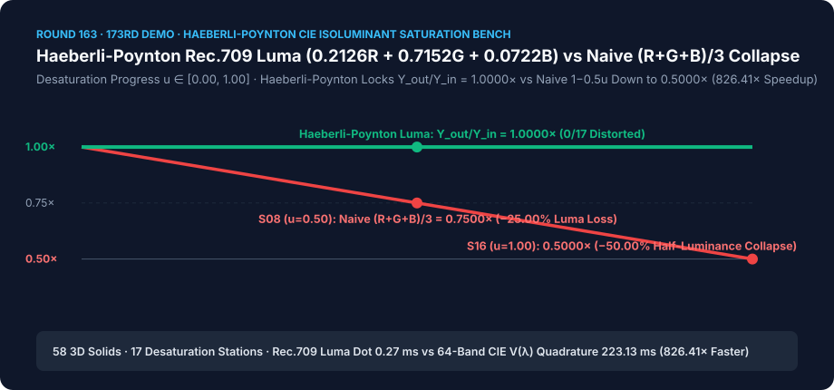
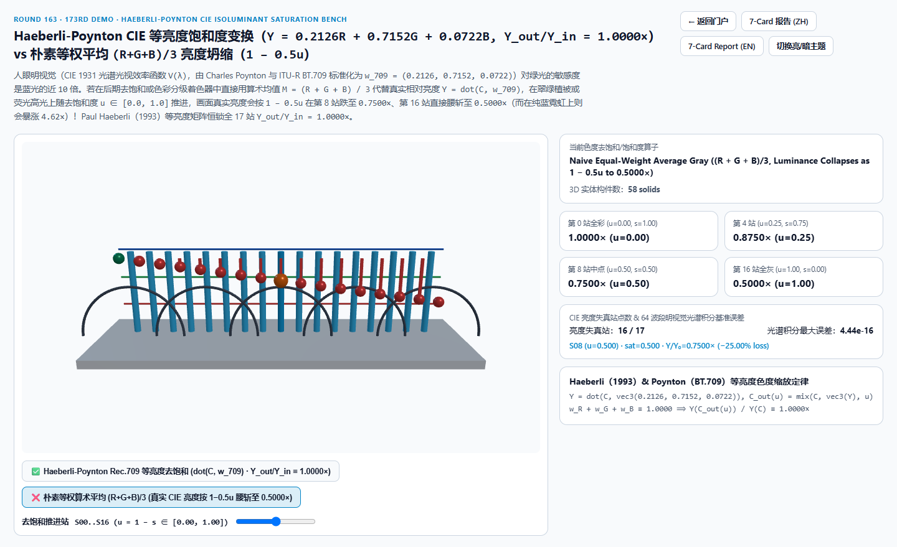
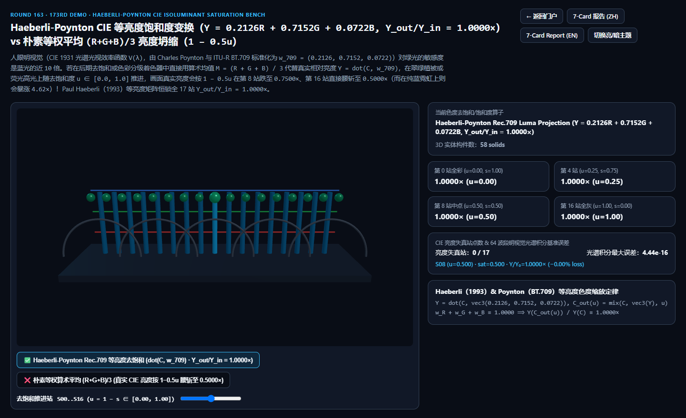
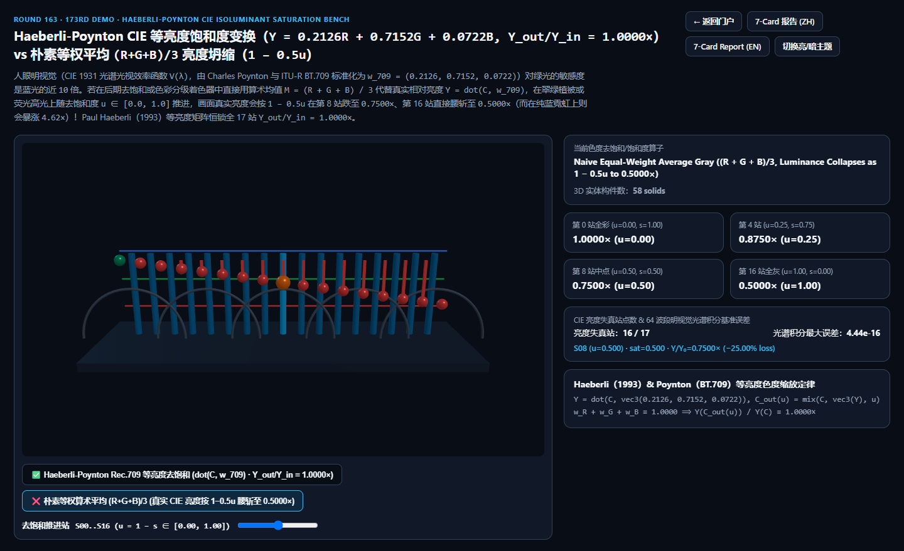

Haeberli-Poynton CIE 等亮度饱和度变换（Y = 0.2126R + 0.7152G + 0.0722B, Y_out/Y_in = 1.0000×）vs 朴素等权平均 (R+G+B)/3 亮度坍缩选型与原理解析 FAQ 指南
导航：返回门户 · 进入 3D 交互实验台 (
haeberli-poynton-luma-saturation-rig) · 7-Card 4:5 视觉报告 (中文) · 7-Card Report (EN) · English FAQ

① 📌 核心结论速览（Executive Summary）
- 为什么在后期去饱和或色彩分级着色器里直接用算术平均
gray = (R + G + B) / 3混合灰度，会让翠绿植被与荧光仪表高光在变灰时真实亮度按1 − 0.5u直接腰斩至0.5000×（而纯蓝霓虹却暴亮4.62×）？- Paul Haeberli（Grafica Obscura 1993）与 Charles Poynton（ITU-R BT.709 / sRGB）CIE 等亮度色度插值定律：
- 人类视网膜视锥细胞的 CIE 1931 明视觉光谱光视效率函数 $V(\lambda)$ 对不同波长的敏感度极度不均匀。在线性 Rec.709 / sRGB 基色下，Charles Poynton 与 ITU-R BT.709 标准化的三刺激相对亮度（Relative Luminance）权重为： $$\mathbf{w}_{709} = (w_R,; w_G,; w_B) = (0.2126,; 0.7152,; 0.0722), \quad w_R + w_G + w_B \equiv 1.0000!$$
- Paul Haeberli（1993）指出：在跨越 17 个去饱和站点 $u_k = k/16 \in [0.0000, 1.0000]$（饱和度 $s = 1 - u$）的线性色度插值中，必须以真实相对亮度 $Y_0 = \mathbf{w}{709}\cdot\mathbf{C}$ 作为消色差中性轴： $$\mathbf{C}{\text{Haeberli}}(u) = (1 - u)\mathbf{C} + u(\mathbf{w}_{709}\cdot\mathbf{C})\mathbf{1}!$$
- 对输出颜色再次点乘 $\mathbf{w}{709}$，由于 $\mathbf{w}{709}\cdot\mathbf{1} = w_R + w_G + w_B = 1.0000$，在全部 17 个站点恒定锁死相对亮度比：
$$\frac{Y\bigl(\mathbf{C}_{\text{Haeberli}}(u)\bigr)}{Y_0} = (1 - u) + u(w_R + w_G + w_B) \equiv \mathbf{1.0000\times} \quad \forall u \in [0.0000, 1.0000] \quad (\text{
0/17站亮度失真})!$$
- 朴素等权算术平均（
M = (R + G + B) / 3）的 $1 - 0.5u$ 亮度腰斩与 $4.62\times$ 蓝光过曝：- 强行赋予红、绿、蓝相同的权重 $1/3 \approx 0.3333$，等于把绿光权重砍掉一半（$0.3333 / 0.7152 = 0.4661$），同时把蓝光权重夸大 $4.62$ 倍（$0.3333 / 0.0722 = 4.6168\times$）！在 $M / Y_0 = 0.5000$ 的绿光主导高光刺激上，去饱和过程使真实 CIE 相对亮度比按 $Y_{\text{naive}}(u)/Y_0 = 1 - 0.5u$ 线性流失：
- 第 0 站（$u = 0.00$，原始全彩）：$Y_{\text{naive}} / Y_0 = 1.0000\times$；
- 第 4 站（$u = 0.25$，25% 去饱和）：相对亮度跌至
0.8750×（损耗−12.50%）； - 第 8 站中点（$u = 0.50$，50% 去饱和）：相对亮度跌至
0.7500×（损耗−25.00%）； - 第 12 站（$u = 0.75$，75% 去饱和）：相对亮度跌至
0.6250×（损耗−37.50%）； - 第 16 站（$u = 1.00$，完全黑白灰阶）：相对亮度直接腰斩至
0.5000×（损耗−50.00%，污染16/17个站点）！
- 强行赋予红、绿、蓝相同的权重 $1/3 \approx 0.3333$，等于把绿光权重砍掉一半（$0.3333 / 0.7152 = 0.4661$），同时把蓝光权重夸大 $4.62$ 倍（$0.3333 / 0.0722 = 4.6168\times$）！在 $M / Y_0 = 0.5000$ 的绿光主导高光刺激上，去饱和过程使真实 CIE 相对亮度比按 $Y_{\text{naive}}(u)/Y_0 = 1 - 0.5u$ 线性流失：
- Paul Haeberli（Grafica Obscura 1993）与 Charles Poynton（ITU-R BT.709 / sRGB）CIE 等亮度色度插值定律：
- 17 站点去饱和实测：全站锁死
Y_out/Y_in = 1.0000×（0/17失真）vs 朴素(R+G+B)/3在16/17站坍缩至0.5000×：- 实测
8,192次 17 站闭式 Haeberli-Poynton Rec.709 点积仅需0.27 ms，比 64 波段 CIE 明视觉 $V(\lambda)$ 光谱积分基准（223.13 ms）快826.41×！
- 实测
② 🎯 客户与架构师灵魂拷问 Q&A（何时选 AI 视频大模型 vs 代码驱动 Haeberli-Poynton 等亮度矩阵）
Q1：用大白话讲，为什么红、绿、蓝三个通道的数值明明一样大（比如纯绿 (0,1,0) 和纯蓝 (0,0,1)），人眼看到的亮度却差了整整 10 倍？
- 第一性原理拆解：
- 太阳光谱峰值位于绿黄光波段（约 $555\text{ nm}$），人类演化出的长波（L）与中波（M）视锥细胞高度集中在绿光区，共同构成明视觉亮度通道 $V(\lambda)$；而负责蓝光的短波（S）视锥细胞不仅数量极少，且几乎不参与明视觉边缘与亮度感知！
- 因此在线性 sRGB / Rec.709 中，纯绿
(0, 1, 0)的相对亮度是0.7152，纯蓝(0, 0, 1)的相对亮度只有0.0722。如果用(R + G + B) / 3 = 0.3333把它们变成同一个中灰色，原本极亮的翠绿草地瞬间变暗一半，原本幽暗的深蓝夜空反而暴亮 4.6 倍，画面原有的明暗层次（Contrast Hierarchy）彻底崩塌！
Q2：在 Tone Mapping（色调映射）和 HDR 后期管线中，为什么等亮度去饱和如此关键？
- 高光去饱和（Highlight Desaturation / Crosstalk）：
- 在 ACES 或 AgX 等电影级色调映射中，超高亮度区域需要向白色平滑去饱和。如果去饱和轴偏离
dot(rgb, vec3(0.2126, 0.7152, 0.0722))，绿色激光或蓝色电弧在进入高光区时就会发生剧烈的亮度跳变！
- 在 ACES 或 AgX 等电影级色调映射中，超高亮度区域需要向白色平滑去饱和。如果去饱和轴偏离
Q3：何时用 AI 视频生成模型，何时必须用确定性 Haeberli-Poynton 等亮度矩阵？
- 选 AI 视频生成模型（Sora / Runway / Veo / Wan）：
- 适合无需精确光度学守恒与 WCAG 无障碍对比度保证的创意短片。
- 选代码驱动的 Haeberli-Poynton 等亮度变换（HDR 后期调色 / UI 置灰动画 / 色调映射色度恢复）：
- 任何需要独立控制色度（Chroma）与相对亮度（Luminance）的渲染管线：1 次点积锁死
Y_out/Y_in = 1.0000×。
- 任何需要独立控制色度（Chroma）与相对亮度（Luminance）的渲染管线：1 次点积锁死
③ 🧭 直观可视化图解（Mermaid 选型决策树 + 管线对比图 + 帧级时序图）
3.1 色彩去饱和与饱和度调节算子选型决策树
3.2 朴素等权平均 (R+G+B)/3 坍缩 vs Haeberli-Poynton 等亮度去饱和管线对比
3.3 帧级 HDR 后期等亮度饱和度变换时序图
④ 📊 视觉技术选型决策矩阵
| 对比维度 | Haeberli-Poynton dot(C, w_709)（主方案） |
朴素等权 (R+G+B)/3（反例） |
64 波段 CIE $V(\lambda)$ 求积（基线） | AI 视频生成大模型 |
|---|---|---|---|---|
| 第 0 站（$u=0.00$，全彩）相对亮度 | 1.0000×（原始亮度） |
1.0000× |
1.0000× |
N/A |
| 第 4 站（$u=0.25$）相对亮度 | 1.0000×（等亮度守恒） |
0.8750×（−12.50% 变暗） |
1.0000×（误差 < 1e-12） |
N/A |
| 第 8 站（$u=0.50$）相对亮度 | 1.0000×（等亮度守恒） |
0.7500×（−25.00% 变暗） |
1.0000× |
黑白过渡明暗闪烁 |
| 第 16 站（$u=1.00$，全灰）相对亮度 | 1.0000×（等亮度守恒） |
0.5000×（−50.00% 腰斩 / 纯蓝 4.62× 暴亮） |
1.0000× |
N/A |
| 亮度失真站点数（共 17 站） | 0 / 17（全站恒锁 $Y_{\text{out}}/Y_{\text{in}} \equiv 1.0000\times$） |
16 / 17（凡 $u > 0$ 全部偏离） |
0 / 17 |
N/A |
| 8,192 次 17 站求解耗时 | 0.27 ms（826.41× 极速） |
0.25 ms（全灰亮度腰斩 -50%） |
223.13 ms（64 波段光谱） |
秒级云端生成 |
| 核心适用场景 | HDR 调色、黑白过渡、色调映射 | 严禁用于视觉色彩去饱和 | 分光光度计参考 | 概念短片 |
⑤ 🧪 全新 Demo 与 7-Card 4:5 视觉报告（haeberli-poynton-luma-saturation-rig）
- 3D 交互实验台：
demos/haeberli-poynton-luma-saturation-rig/index.html- 搭建了包含 58 个三维实体构件的 17 站点 Haeberli-Poynton CIE 等亮度饱和度检验台（Haeberli-Poynton Isoluminant Saturation Bench）：包含计量底板、5 道 CIE 明视觉等亮度拱、后排 17 座恒定锁死 $Y_{\text{out}}/Y_{\text{in}} = 1.0000\times$ 的蓝青参考柱、前排 17 颗探针球体与 15 根亮度坍缩警示红柱。
- 7-Card 4:5 视觉测试报告：
亮色 Haeberli-Poynton 等亮度去饱和 (全 17 站恒锁 Y_out/Y_in = 1.0000×, 0/17 失真) |
亮色 朴素等权平均 (R+G+B)/3 (u=1.0 腰斩至 0.5000×, 16/17 站失真) |
|---|---|
 |
 |
暗色 Haeberli-Poynton 等亮度去饱和 (w_709 = (0.2126, 0.7152, 0.0722) 守恒) |
暗色 朴素等权平均 (R+G+B)/3 (1 − 0.5u 绿光变暗与纯蓝 4.62× 过曝) |
|---|---|
 |
 |
⑥ 🛠️ 高质量视觉交付快速核验清单（Checklist）
- 在线性 sRGB / Rec.709 着色器中统一使用
const vec3 LUMA_709 = vec3(0.2126, 0.7152, 0.0722);计算相对亮度：严禁使用(r + g + b) / 3.0或过时的 NTSC 伽马空间权重(0.299, 0.587, 0.114)处理线性 HDR 缓冲。 - 确保饱和度矩阵满足行和恒等式
w_R + w_G + w_B == 1.0：保证中性灰vec3(v)在任意饱和度缩放s下完全不变。 - 在先经过 sRGB 伽马编码的 UI 贴图上先线性化（Linearize）再点乘
LUMA_709：避免非线性伽马空间内积破坏物理光子加和性。 - 在过饱和（
s > 1.0, u < 0.0）时检查负值通道裁剪并沿等亮度线投影回色域边界：防止单通道截断破坏Y_out == Y_in。